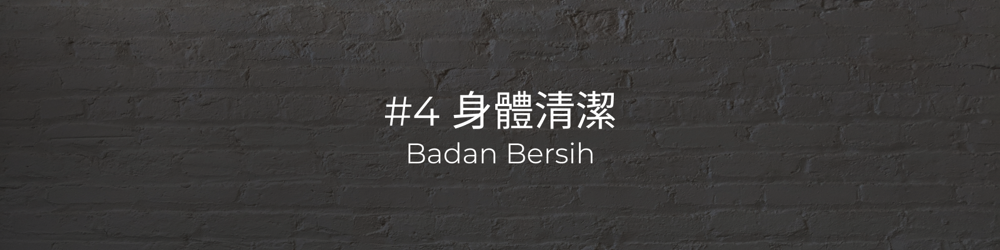

- 床上洗頭：Sampo di tempat tidur
- 檢查頭皮是否有皮脂漏。若有，先在頭皮抹嬰兒油，於 15 分鐘後再沖洗
Periksa kulit kepala untuk kebocoran sebum. Jika ada, oleskan baby oil ke kulit kepala dan biarkan selama 15 menit sebelum dibilas - 將枕頭移開，以大毛巾墊在頸部下方，並將洗頭槽放在頭部下方
Lepaskan bantal, taruh handuk besar di bawah leher, dan letakkan baskom sampo di bawah kepala - 在洗頭槽的排水端放至空水桶
Tempatkan di ujung saluran pembuangan sampo ke dalam ember kosong - 塞入棉花至耳朵
Masukkan kapas ke dalam telinga - 以勺子舀水淋濕頭髮
Basahi rambut Anda dengan sendok - 將洗髮精搓出泡沫後再抹到頭皮上，並以指腹搓揉
Kerjakan sampo menjadi busa, lalu oleskan ke kulit kepala, dan gosok dengan ujung jari Anda - 以勺子舀水沖洗洗髮精，留意耳後與髮際線的泡沫
Bilas sampo dengan sesendok air, perhatikan buih di belakang telinga dan di sepanjang garis rambut - 用脖子下方的大毛巾，包住頭部
Tutupi kepala Anda dengan handuk besar tepat di bawah leher Anda - 用吹風機吹乾頭髮，再放回枕頭
Keringkan rambut Anda sebelum meletakkannya kembali di atas bantal - 倒掉水桶內的水
Tuangkan air ke dalam ember - 男性會陰沖洗：Douching tubuh bagian bawah pria
- 放置便盆於被看護人腰臀以下部位或使用看護墊，亦可直接在尿布上清洗
Taruh pispot atau alas di bawah pantat pasien atau juga bisa membersihkan di atas popok. - 將被看護人頭頸部墊高，膝蓋彎曲
Sanggah tinggi kepala pasien, tekuk bagian lutut pasien yang sehat - 戴上手套，將棉籤沾濕後，再抹上沐浴乳
Kenakan sarung tangan pembersih, basahi kapas, lalu oleskan body wash - 一手握住陰莖，做出包皮往後推的動作並口述，露出龜頭，龜頭以棉籤清洗
Satu tangan menggenggam batang penis, membuka kulitnya sambil menyampaikan kepada pasien, terlihat kepala penis lalu bersihkan dengan batangan kapas pembersih - 將濕潤的毛巾沾上沐浴乳，依序清潔：陰莖、陰囊、肛門
Celupkan handuk basah dengan body wash dan bersihkan secara berurutan: penis, skrotum, anus - 以沖洗壺或毛巾將沐浴乳沖乾淨
Bilas sabun tubuh dengan kendi bilas dan handuk - 移除便盆，用衛生紙依序由上而下擦乾陰部與臀部
Lepaskan pispot dan keringkan alat kelamin dan bokong dari atas ke bawah dengan tisu toilet - 女性會陰沖洗：Douching perineum wanita
- 放置便盆於被看護人腰臀以下部位或使用看護墊，亦可直接在尿布上清洗
Taruh pispot atau alas di bawah pantat pasien atau juga bisa membersihkan di atas popok. - 將被看護人頭頸部墊高，膝蓋彎曲
Sanggah tinggi kepala pasien, tekuk bagian lutut pasien yang sehat - 使用沖洗壺，更換不同棉籤，依序清潔：尿道口、遠側小陰唇、近側小陰唇、遠側大陰唇、近側大陰唇
Menggunakan panci bilas, ganti penyeka kapas yang berbeda untuk membersihkan secara berurutan: lubang uretra, labia minora distal, labia minora proksimal, labia mayor distal, labia mayor proksimal - 使用乾棉籤依上述順序輕輕擦乾
Keringkan dengan lembut menggunakan kapas kering sesuai urutan di atas - 移除便盆，用衛生紙依序由上而下擦乾陰部與臀部
Lepaskan pispot dan keringkan alat kelamin dan bokong dari atas ke bawah dengan tisu toilet - 尿管照護：Perawatan Kateter
- 觀察尿液之量、顏色、氣味及沉澱物
Perhatikan jumlah carian kemih, warna, bau dan endapan - 更換尿管膠布的固定位置，以井字固定法，男性固定於小腹，女性固定在大腿內側
Ganti posisi merekat kateter urin, cara menempelnya berbentuk “ 井 ”, untuk pasien pria ditempel di perut bawah, untuk pasien wanita ditempel di bagian paha dalam - 移動尿袋時，注意尿袋引流位置保持在膀胱以下，如需移動，需反折尿管
Saat memindahkan kateter urin harus memperhatikan harus berada di bawah organ kantung kemih, bila perlu untuk dipindahkan maka lipat terlebih dahulu selangnya - 尿袋開口隨時關閉，避免污染
Untuk menghindari infeksi maka pastikan mulut keteter urin dalam keadaan tertutup rapat - 檢查尿管通暢，避免受壓扭曲
Periksa kelancaran peredaran selang, jangan sampai tertekuk